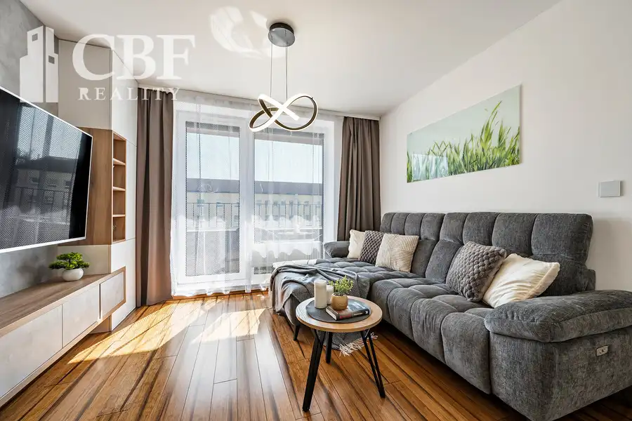
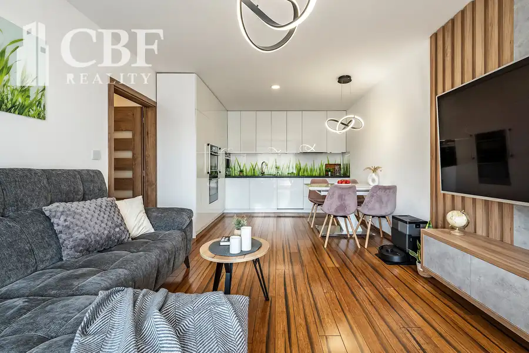
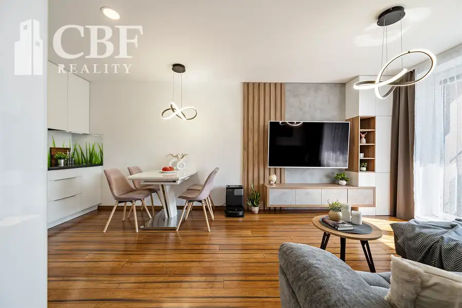
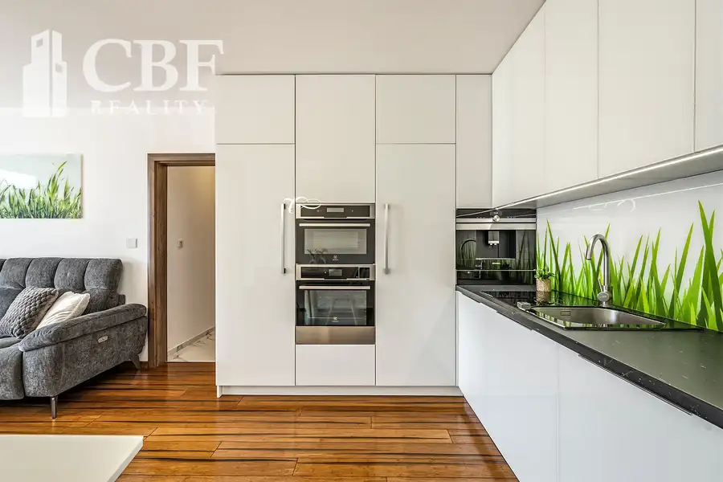
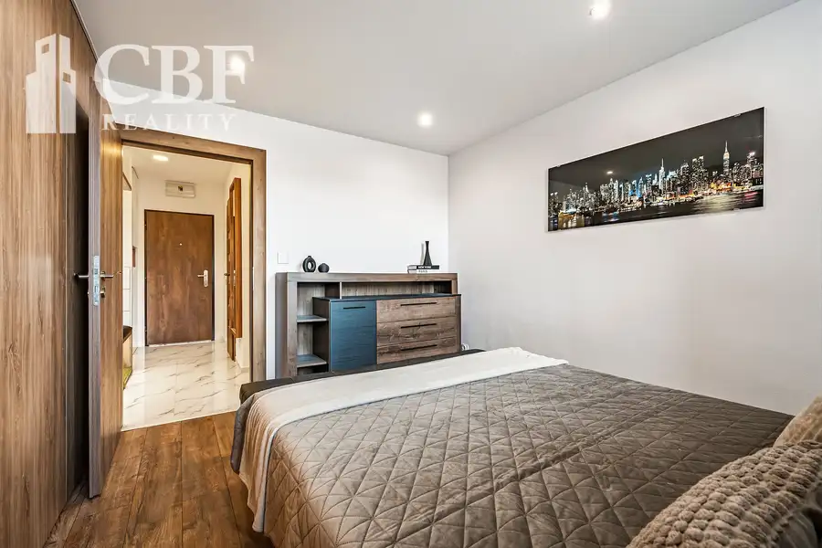

Vlastné parkovanie, dve lodžie a interiér bez ďalších investícií
Poprad






- Dispozícia2-izbový
- Plocha58.99 m²
- Poschodie2.
- StavKompletná rekonštrukcia
- VlastníctvoOsobné
O nehnuteľnosti
Prísť domov, zaparkovať na vlastnom mieste, pripraviť si kávu vo vstavanom kávovare a vychutnať si ju na jednej z dvoch lodžií. Aj takto môže vyzerať váš bežný deň.Na Rovnej ulici v Spišskej Sobote ponúkame na predaj nadštandardne zariadený 2,5-izbový byt s výmerou 58,99 m², ktorý spája premyslenú dispozíciu, množstvo úložného priestoru a vybavenie, pri ktorom nemusíte riešiť žiadne ďalšie investície.Byt sa predáva kompletne zariadený – súčasťou zostáva nábytok vrátane vstavaného nábytku vyrobeného na mieru aj všetky spotrebiče. Nový majiteľ tak získava harmonicky zladený interiér pripravený na bývanie od prvého dňa.Srdcom bytu je príjemná obývacia izba prepojená s kuchyňou, z ktorej sa vychádza na väčšiu lodžiu. Kuchynská linka s dĺžkou približne päť metrov ponúka dostatok pracovnej aj úložnej plochy a je vybavená vstavanými spotrebičmi: chladničkou, samostatnou mrazničkou, umývačkou riadu, mikrovlnnou rúrou, multifunkčnou rúrou s parnou funkciou, varnou doskou s odsávačom pár a vstavaným kávovarom Siemens.Spálňa disponuje vkusnými vstavanými skriňami na mieru a prechádza sa z nej do ďalšej menšej izby. Tá môže slúžiť ako detská izba, pracovňa alebo hosťovská izba. Jej veľkým bonusom je výstup na druhú lodžiu.Pri vstupe sa nachádza šatníkový priestor a menšia práčovňa, ktorú môžete ponechať v súčasnom využití alebo ju premeniť na väčší šatník či technickú miestnosť. Kúpeľňa ponúka sprchovací kút s hydromasážnym sprchovým panelom, závesnú toaletu aj bidet, ktoré dotvárajú vyšší komfort každodenného bývania.Veľkou výhodou je vlastné parkovacie miesto priamo pri bytovom dome. Žiadne večerné hľadanie voľného miesta – zaparkujete a ste doma. K bytu zároveň prislúcha pivnica s výmerou 2,51 m².Byt sa nachádza na 2. poschodí bytového domu, ktorý v roku 2018 prešiel kompletnou prestavbou na moderné bývanie. Obyvateľom sú k dispozícii dva výťahy a spoločná kočikáreň.Rovná ulica ponúka veľkú výhodu – centrum Popradu aj historické námestie Spišskej Soboty máte naozaj na dosah a pohodlne sa tam dostanete aj pešo. V blízkom okolí sa nachádza kompletná občianska vybavenosť, Lidl, AquaCity Poprad, školy aj zastávka MHD. Výborná je aj dostupnosť autom – rýchlo sa napojíte na diaľnicu a pohodlne sa dostanete smerom na Vysoké Tatry aj Kežmarok.Ranná káva na lodžii, večer bez hľadania parkovania a centrum mesta pár minút od domu. Bývanie, ktoré ponúka viac pohodlia a menej kompromisov. Dohodnime si obhliadku a príďte sa o tom presvedčiť osobne.Barbora Bělohlávková0904 945 687belohlavkova.bbrealestate@gmail.com
Parametre
- Cellar area
- 2.51 m²
- Cena vrátane energií
- Nie
- Druh
- 2 izbový byt
- Dátum zverejnenia
- 04. 10. 2026
- Energie
- 170
- Plocha lodžie
- 8.63 m²
- Podlažie
- 2
- Počet izieb / miestností
- 2
- Počet lodžií
- 2
- Počet pivníc
- 1
- Prechodová izba
- Áno
- Stav nehnuteľnosti
- Kompletná rekonštrukcia
- Typ
- Predaj
- Umiestnenie
- Ďalšie nadzemné podlažie
- Vlastníctvo
- Osobné
- Vybavenie
- Lodžia, Pivnica, Verejné parkovanie, Výťah
- Zariadenie
- Zariadené kompletne
- Úžitková plocha
- 58.99 m²
Kde to je


Mohlo by Vás zaujímať
 BytNové
155 000 €3-izbový byt 75 m², s balkónom na Okružnej ulici | Poprad
Poprad
3-izbový75 m²
BytNové
155 000 €3-izbový byt 75 m², s balkónom na Okružnej ulici | Poprad
Poprad
3-izbový75 m²
 Komerčné priestoryNové
3 180 €Sklad/výrobný priestor 636 m², matejovce – priemyselná zóna
Poprad
636 m²
Komerčné priestoryNové
3 180 €Sklad/výrobný priestor 636 m², matejovce – priemyselná zóna
Poprad
636 m²
 DomNové
279 000 €PREDAJ 5-izbový rodinný dom po rekonštrukcii, s bazénom Spišská Belá
Spišská Belá
395 m²
DomNové
279 000 €PREDAJ 5-izbový rodinný dom po rekonštrukcii, s bazénom Spišská Belá
Spišská Belá
395 m²